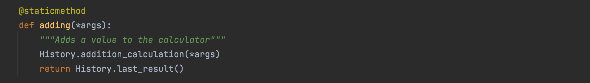
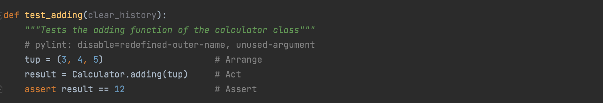

OOP
AAA Testing
Testing your code as you work is crucial for becoming an excellent developer. No one can write an entire program in one shot without errors, so testing along the way will help build working components in code, and help reduce the amount of bugs encountered. Unit testing and checking each working part of the code is crucial to writing a scalable code, because if something goes wrong along the way, or a function does not perform properly at a particular threshold, a unit test would be able to pinpoint exactly where there is an issue and this leads to easier and more effective debugging. The AAA unit test is a popular form of the unit test that I will walk you through below!
AAA testing is an acronym for Arrange, Act, Assert. These are the steps to develop an effective
unit test for your code.
Arrange - involves the construction of the test case. This is where you set up the situation and
parameters needed to test a function or method.
Act - is executing the target behavior of the test case. Utilizing the arrangement from the previous
step, Act involves performing the action that is being tested.
Assert - is the act of confirming expected outcomes. This step takes the result from the Act step
and tests it against the expected outcome
Refer to this picture below to see how it's done!
This addition function adds a tuple of numbers and stores it to the history. This is the facade of the calculator so the actual calculation, the object creation, and storing the value in the history is hidden behind the scenes. But regardless, this function is supposed to return the sum of the values. Below is the AAA style unit test for the addition function.
As we can see, all the steps come together to form one cohesive test. The first line where the tuple is created would be the Arrange step where data is being set up to perform the test. The second step is Act where the main action is performed. The addition function is called and the result variable is set to the result of the method. Finally in the last step, the Assertion is made where we know the expected result, and we are making sure that the method returns the expected result. In this case, 3 + 4 + 5 = 12.
Testing Using external Data
An important aspect to testing your code is making sure that it is suitable to handle copious amounts of data when it scales up. In this example, we use pandas to supply csv files containing data that will test each of the operations.